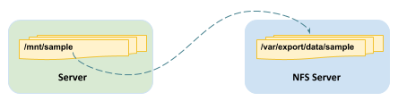
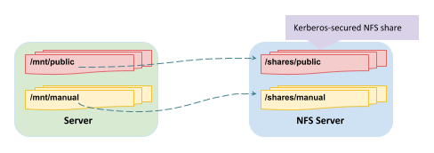

# showmount -e nfs.example.com
Export list for nfs.example.com:
/var/export/data/sample *NFS
Table of Contents
NFS 挂载网络存储
NFS（网络文件系统）是由 Linux、UNIX 及类似操作系统用作本地网络文件系统的一种互联网标准协议。它是一种活动扩展之下的开放标准，可支持本地 Linux 权限和文件系统功能。
RHEL 7 在默认情况下支持 NFSv4（该协议的版本 4），并在该版本不可用的情况下自动回退到 NFSv3 和 NFSv2。NFSv4 使用 TCP 协议与服务器进行通信，而较早版本的 NFS 则可能使用 TCP 或 UDP。
NFS 服务器导出共享（目录），而 NFS 客户端将导出的共享挂载到本地挂载点（目录）。本地挂载点必须已存在。可以通过多种方式挂载 NFS 共享：
-
使用 mount 命令手动挂载 NFS 共享
-
使用 /etc/fstab 在启动时自动挂载 NFS 共享
-
通过称为自动挂载的过程根据需要挂载 NFS 共享
NFS 服务器通过多种方法保护文件的访问权限：none、sys、krb5、krb5i 和 krb5p。NFS 服务器可以选择为每个导出的共享提供一种方法或多种方法。NFS 客户端必须使用为已导出共享规定的方法之一连接到该共享，该方法以挂载选项 sec=method 的形式指定。
| 方法 | 说明 |
|---|---|
none |
可对文件进行匿名访问，对服务器的写入（如允许）将分配为使用 UID 和 GID nfsnobody |
sys |
文件访问权限基于 UID 和 GID 值的标准 Linux 文件权限。如果未指定，则此方法是默认值 |
krb5 |
客户端必须使用 Kerberos 证明身份，然后适用标准 Linux 文件权限 |
krb5i |
添加加密性强的保证，确保每个请求中的数据未被篡改 |
krb5p |
为客户端与服务器之间的所有请求添加加密，防止网络中的数据泄露。这会对性能产生影响 |
NFS 共享挂载三步骤
-
识别：NFS 服务器的管理员可以提供导出详细信息，包括安全性要求。
-
挂载点：使用 mkdir 在合适的位置创建挂载点
-
挂载：这里有两种选择：手动挂载，或并入 /etc/fstab 文件中。为任一操作切换到 root 或使用 sudo。
Mount NFS share

The NFS Server run on nfs.example.com, which provided a shared nfs share /var/export/data/sample, the goal of this section is to mount the NFS share to Server, and /mnt/sample as a mountpoint.
There are three basic steps to mounting an NFS share:
Identify - identify the NFS server can provide export details
|
Note
|
NFSv4 use the different ways to identify. |
Mount point - create a mount point in a suitable location
# mkdir /mnt/sampleMount - use the mount command
# mount -t nfs -o sync nfs.example.com:/var/export/data/sample /mnt/sample|
Note
|
The -t nfs option is the file system type for NFS shares (not strictly required, shown for completeness). The -o sync option tells mount to immediately synchronize write operations with the NFS server (the default is asynchronous). The default security method (sec=sys) will be used to try mounting the NFS share, using standard Linux file permissions. |
|
Note
|
The umount /mnt/sample can unmount the share.
|
NFS 自动挂载网络存储
自动挂载器是一种服务 (autofs)，它可以“根据需要”自动挂载 NFS 共享，并将在不再使用 NFS 共享时自动卸载这些共享。自动挂载器优势包括：
-
用户无需具有 root 特权就可以运行 mount/umount 命令
-
自动挂载器中配置的 NFS 共享可供计算机上的所有用户使用，受访问权限约束
-
NFS 共享不像 /etc/fstab 中的条目一样永久连接，从而可释放网络和系统资源
-
自动挂载器完全在客户端配置，无需进行任何服务器端配置
-
自动挂载器与 mount 命令使用相同的挂载选项，包括安全性选项
-
支持直接和间接挂载点映射，在挂载点位置方面提供了灵活性
-
间接挂载点可通过 autofs 创建和删除，从而减少了手动管理这些挂载点的需求
-
NFS 是自动挂载器的默认文件系统，但自动挂载器也可以用于自动挂载多种不同的文件系统
-
autofs 是管理方式类似于其他系统服务的一种服务
创建自动挂载的步骤：
-
安装 autofs 软件包，
yum -y install autofs，此软件包包含使用自动挂载器挂载 NFS 共享所需的所有内容。 -
向 /etc/auto.master.d 添加一个主映射文件；此文件确定用于挂载点的基础目录，并确定用于创建自动挂载的映射文件。例如，
/etc/auto.master.d/demo.autofs，主映射文件的名称不重要，但它通常是一个有意义的名称。唯一的要求是它的扩展名必须为 .autofs。主映射文件可以保存多个映射条目，或者使用多个文件来将配置数据分开。 -
创建映射文件。映射文件确定挂载点、挂载选项和挂载的源位置，例如
/etc/auto.demo，文件名不重要，但按照惯例，该文件位于 /etc 中并且名为 auto.name，其中 name 是对所包含内容有意义的名称。 -
启动并启用自动挂载服务，例如
systemctl start autofs。
Mount secured NFS share

The NFS Server run on nfs.example.com, which provided two shared nfs share:
-
/shares/public- a kerberos-secured NFS share -
/shares/manual- a standard Linux file permissions based NFS share
This section show how to mount these two NFS share.
Enable Kerberos access and security
mv sample.keytab /etc/krb5.keytabEnable and start the nfs-secure service
systemctl enable nfs-secure
systemctl start nfs-securecreate a mount point in a suitable location
mkdir mkdir -p /mnt/{public,manual}Edit the /etc/fstab, add the below line to the end of the file
nfs.example.com:/shares/public /mnt/public nfs sec=krb5p,sync 0 0mount the secure NFS share
mount -amount the normal MFS share
mount -o sync,sec=sys nfs.example.com:/shares/manual /mnt/manualverify the mount
df -hAutomounting NFS
This section used the almost same situation as Mount secured NFS share, but use the automounting mode.
Enable Kerberos access and security
mv sample.keytab /etc/krb5.keytabEnable and start the nfs-secure service
systemctl enable nfs-secure
systemctl start nfs-secureInstall autofs
yum -y install autofsSetup direct-map automount, create and edit the /etc/auto.master.d/direct.autofs add
/- /etc/auto.directCreate /etc/auto.direct, add
/mnt/public -rw,sync,sec=krb5p nfs.example.com:/shares/publicSetuo indirect-map automount, create and edit the /etc/auto.master.d/shares.autofs add
/shares /etc/auto.sharesCreate /etc/auto.shares, add
* -rw,sync,sec=krb5p nfs.example.com:/shares/&Enable and start the automount
systemctl enable autofs
systemctl start autofsMounting a SMB File System
install cifs-utils
yum -y install cifs-utilscreate the Mount Point
mkdir ~/workcreate the Credentials File
mkdir /secure
vim /secure/student.smbadd the following lines
username=student
password=student
domain=MYGROUPuse chmod to protect the secure directory and the student.smb credentials file
chmod 770 /secure
chmod 600 /secure/student.smbedit /etc/fstab add
//server1/student /home/student/work cifs credentials=/secure/student.smb 0 0mount the file system
mount -a